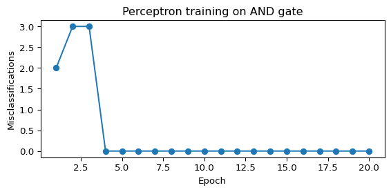
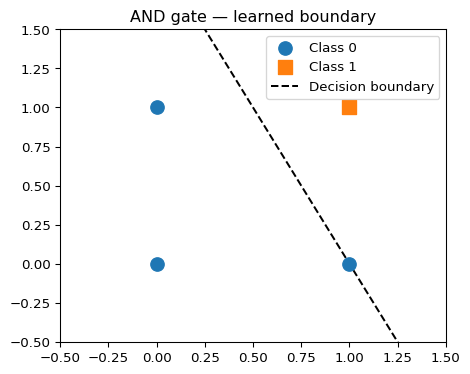
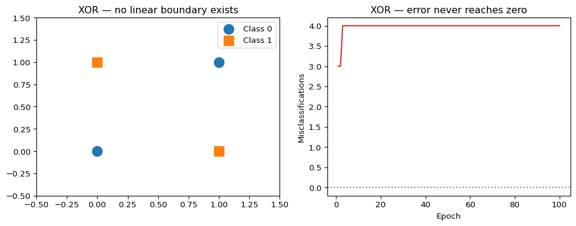

import numpy as np
class Perceptron:
"""
Binary perceptron classifier.
Parameters
----------
learning_rate : float
Step size for weight updates (η).
n_epochs : int
Number of passes over the training data.
"""
def __init__(self, learning_rate=0.1, n_epochs=50):
self.learning_rate = learning_rate
self.n_epochs = n_epochs
def fit(self, X, y):
"""Train on feature matrix X (shape n_samples × n_features) and labels y ∈ {0, 1}."""
n_samples, n_features = X.shape
self.weights = np.zeros(n_features)
self.bias = 0.0
self.errors_per_epoch = []
for epoch in range(self.n_epochs):
errors = 0
for xi, yi in zip(X, y):
y_hat = self.predict_single(xi)
delta = self.learning_rate * (yi - y_hat)
self.weights += delta * xi
self.bias += delta
errors += int(delta != 0)
self.errors_per_epoch.append(errors)
return self
def predict_single(self, x):
"""Predict for one sample."""
return int(np.dot(self.weights, x) + self.bias >= 0)
def predict(self, X):
"""Predict for a batch of samples."""
return np.array([self.predict_single(x) for x in X])
def accuracy(self, X, y):
return np.mean(self.predict(X) == y)The Perceptron
Frank Rosenblatt’s 1958 learning algorithm — the first machine that could learn from examples — with a full Python implementation.
The Paper
Frank Rosenblatt (1958)
The Perceptron: A Probabilistic Model for Information Storage and Organization in the Brain
Psychological Review, 65(6), 386–408.
The guiding question
Can an artificial neural network learn?
Rosenblatt proposes the Perceptron Algorithm — a method for iteratively adjusting the weights of connections between neurons so the network learns to classify inputs correctly. He raises funds from the U.S. Navy to build a physical Perceptron machine. In press coverage at the time, he anticipates walking, talking, self-conscious machines.
Biological Inspiration
The perceptron is modeled on the neuron: a cell that receives signals through its dendrites, integrates them, and fires through its axon if the combined signal crosses a threshold.
Rosenblatt’s key insight was that the strengths of the connections (synapses) could be adjusted — that is, learned — rather than fixed by the programmer. This is the foundational idea of all modern machine learning.
Mathematical Formulation
A perceptron takes a vector of inputs \(\mathbf{x} = (x_1, x_2, \dots, x_n)\), multiplies each input by a learned weight \(w_i\), sums them up, and produces a binary output based on a threshold \(\theta\):
\[ \hat{y} = \begin{cases} 1 & \text{if } \sum_{i=1}^n w_i x_i + b \geq 0 \\ 0 & \text{otherwise} \end{cases} \]
where \(b\) is a bias term (equivalent to a weight on a constant input of 1).
In vector form:
\[ \hat{y} = \mathbf{1}[\mathbf{w} \cdot \mathbf{x} + b \geq 0] \]
The threshold function \(\mathbf{1}[\cdot]\) is the original activation function — the Heaviside step function. It fires (outputs 1) when the weighted sum crosses zero, and is silent (outputs 0) otherwise. Later networks replaced it with differentiable alternatives like the sigmoid — a requirement for backpropagation — and eventually ReLU.
The perceptron defines a linear decision boundary — a hyperplane that separates the two classes in input space.
The Perceptron Learning Rule
Training a perceptron means finding weights \(\mathbf{w}\) and bias \(b\) such that the decision boundary correctly separates the training examples.
The Perceptron Learning Rule is an online update rule: for each misclassified example \((\mathbf{x}^{(i)}, y^{(i)})\):
\[ \mathbf{w} \leftarrow \mathbf{w} + \eta \cdot (y^{(i)} - \hat{y}^{(i)}) \cdot \mathbf{x}^{(i)} \] \[ b \leftarrow b + \eta \cdot (y^{(i)} - \hat{y}^{(i)}) \]
where \(\eta > 0\) is the learning rate.
In plain words:
- If the prediction is correct → no update (the error is 0).
- If the prediction is wrong (predicted 0, true is 1) → push weights toward \(\mathbf{x}\).
- If the prediction is wrong (predicted 1, true is 0) → push weights away from \(\mathbf{x}\).
Convergence Theorem
If the training data are linearly separable, the Perceptron Learning Rule is guaranteed to converge to a solution in a finite number of steps.
(Rosenblatt 1958; Novikoff 1962)
Python Implementation
Let’s implement the perceptron from scratch using only NumPy.
Demo: Learning the AND Gate
The AND gate is linearly separable — a perfect test case for the perceptron.
# AND gate: output is 1 only when both inputs are 1
X_and = np.array([[0, 0], [0, 1], [1, 0], [1, 1]])
y_and = np.array([0, 0, 0, 1])
model = Perceptron(learning_rate=0.1, n_epochs=20)
model.fit(X_and, y_and)
print("Learned weights:", model.weights)
print("Learned bias: ", model.bias)
print()
for xi, yi in zip(X_and, y_and):
print(f" Input {xi} → predicted {model.predict_single(xi)}, true {yi}")
print(f"\nAccuracy: {model.accuracy(X_and, y_and):.0%}")Learned weights: [0.2 0.1]
Learned bias: -0.20000000000000004
Input [0 0] → predicted 0, true 0
Input [0 1] → predicted 0, true 0
Input [1 0] → predicted 0, true 0
Input [1 1] → predicted 1, true 1
Accuracy: 100%Training Curve
import matplotlib.pyplot as plt
plt.figure(figsize=(6, 3))
plt.plot(range(1, len(model.errors_per_epoch) + 1), model.errors_per_epoch, marker="o")
plt.xlabel("Epoch")
plt.ylabel("Misclassifications")
plt.title("Perceptron training on AND gate")
plt.tight_layout()
plt.show()
Decision Boundary
def plot_decision_boundary(model, X, y, title="Perceptron decision boundary"):
fig, ax = plt.subplots(figsize=(5, 4))
# scatter plot
ax.scatter(X[y == 0, 0], X[y == 0, 1], s=100, label="Class 0", zorder=3)
ax.scatter(X[y == 1, 0], X[y == 1, 1], s=100, marker="s", label="Class 1", zorder=3)
# decision boundary: w0*x0 + w1*x1 + b = 0 → x1 = -(w0*x0 + b) / w1
x_vals = np.linspace(-0.5, 1.5, 200)
if model.weights[1] != 0:
y_vals = -(model.weights[0] * x_vals + model.bias) / model.weights[1]
ax.plot(x_vals, y_vals, "k--", label="Decision boundary")
ax.set_xlim(-0.5, 1.5)
ax.set_ylim(-0.5, 1.5)
ax.legend()
ax.set_title(title)
plt.tight_layout()
plt.show()
plot_decision_boundary(model, X_and, y_and, title="AND gate — learned boundary")
Demo: A 2-D Linearly Separable Dataset
from sklearn.datasets import make_classification
from sklearn.model_selection import train_test_split
rng = np.random.default_rng(42)
X_2d, y_2d = make_classification(
n_samples=200, n_features=2, n_redundant=0, n_informative=2,
random_state=42, n_clusters_per_class=1
)
X_train, X_test, y_train, y_test = train_test_split(X_2d, y_2d, test_size=0.2, random_state=42)
clf = Perceptron(learning_rate=0.01, n_epochs=100)
clf.fit(X_train, y_train)
print(f"Train accuracy: {clf.accuracy(X_train, y_train):.1%}")
print(f"Test accuracy: {clf.accuracy(X_test, y_test):.1%}")Train accuracy: 79.4%
Test accuracy: 77.5%The XOR Problem — and the Limits of the Perceptron
The perceptron can only learn linearly separable functions. XOR is the canonical counterexample: no single straight line can separate its four points.
X_xor = np.array([[0, 0], [0, 1], [1, 0], [1, 1]])
y_xor = np.array([0, 1, 1, 0]) # XOR: output 1 when inputs differ
xor_model = Perceptron(learning_rate=0.1, n_epochs=100)
xor_model.fit(X_xor, y_xor)
print("XOR accuracy after 100 epochs:", xor_model.accuracy(X_xor, y_xor))
print("(Never reaches 100% — XOR is not linearly separable)")XOR accuracy after 100 epochs: 0.5
(Never reaches 100% — XOR is not linearly separable)fig, axes = plt.subplots(1, 2, figsize=(10, 4))
def plot_xor(ax, X, y, title):
ax.scatter(X[y == 0, 0], X[y == 0, 1], s=150, label="Class 0", zorder=3)
ax.scatter(X[y == 1, 0], X[y == 1, 1], s=150, marker="s", label="Class 1", zorder=3)
ax.set_xlim(-0.5, 1.5)
ax.set_ylim(-0.5, 1.5)
ax.legend()
ax.set_title(title)
plot_xor(axes[0], X_xor, y_xor, "XOR — no linear boundary exists")
# show a failed boundary attempt
x_vals = np.linspace(-0.5, 1.5, 200)
if xor_model.weights[1] != 0:
y_vals = -(xor_model.weights[0] * x_vals + xor_model.bias) / xor_model.weights[1]
axes[0].plot(x_vals, y_vals, "k--", label="Best perceptron attempt")
axes[0].legend()
# training error curve for XOR
axes[1].plot(range(1, len(xor_model.errors_per_epoch) + 1), xor_model.errors_per_epoch, color="tab:red")
axes[1].axhline(y=0, linestyle=":", color="gray")
axes[1].set_xlabel("Epoch")
axes[1].set_ylabel("Misclassifications")
axes[1].set_title("XOR — error never reaches zero")
plt.tight_layout()
plt.show()
Minsky & Papert (1969): Formalizing the Limits
Eleven years after Rosenblatt, Marvin Minsky and Seymour Papert published Perceptrons: An Introduction to Computational Geometry — a rigorous mathematical analysis proving that single-layer perceptrons cannot solve problems requiring non-linear separability (including XOR, parity, and many others).
First AI Winter
The Minsky–Papert critique was so influential that funding for neural network research largely dried up through the 1970s and early 1980s. It took the backpropagation revolution of 1986 (Rumelhart, Hinton & Williams) to show that multi-layer networks could overcome these limitations.
The fundamental insight Minsky & Papert provided was actually constructive: the perceptron fails precisely because it is too shallow. The fix is depth — hidden layers that learn non-linear intermediate representations. The perceptron is not a dead end; it is the foundation.
What the Perceptron Gets Right
Despite its limitations, the perceptron established the core ideas of modern neural network training:
- Parameterized computation — a model defined by learnable weights
- Error-driven updates — adjust weights when the model is wrong
- Convergence guarantees — under the right conditions, learning is mathematically guaranteed
- Biological plausibility — the update rule mirrors synaptic strengthening in neuroscience (Hebbian learning)
Every neural network trained today — from a small classifier to GPT-4 — is built on these same principles, just stacked many layers deep.
Historical Significance
timeline
1943 : McCulloch & Pitts
: First neuron model
1958 : Rosenblatt
: Perceptron — first learning algorithm
1969 : Minsky & Papert
: Prove linear limits → AI Winter
1986 : Rumelhart, Hinton & Williams
: Backpropagation — multi-layer learning
1989 : LeCun
: CNN — deep learning for vision
Further Reading
- Rosenblatt, F. (1958). The Perceptron: A Probabilistic Model for Information Storage and Organization in the Brain. Psychological Review, 65(6), 386–408.
- Minsky, M., & Papert, S. (1969). Perceptrons: An Introduction to Computational Geometry. MIT Press.
- Fundamental Papers — full chronological reading list
- Deep Learning — how multi-layer networks overcome the perceptron’s limits